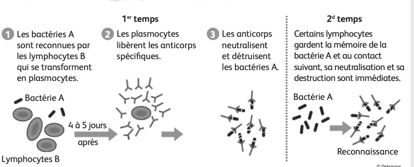
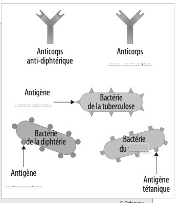
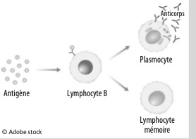
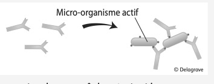

L'immunité est l'ensemble des défenses de l'organisme contre des substances étrangères, essentiellement les micro-organismes. Ce système complexe fait intervenir divers globules blancs ou leucocytes (phagocytes, lymphocytes…) et divers organes. Les micro-organismes se heurtent à trois lignes de défense qui entrent successivement en action en cas d'échec de la précédente.
• 1re ligne de défense : la barrière cutanéo-muqueuse
Peau et muqueuses ont un rôle de barrière physique (obstacle), chimique (sébum, pH acide) et biologique (flores naturelles). Elles empêchent la pénétration des micro-organismes.
• 2e ligne de défense : la réaction inflammatoire et la phagocytose
Lorsque la peau et les muqueuses sont franchies, il y a dilatation des capillaires pour apporter des phagocytes (globules blancs) qui vont réaliser la phagocytose (destruction des micro-organismes par ingestion). Cette dilatation génère localement gonflement, rougeur, chaleur et douleur : c'est la réaction inflammatoire.

• 3e ligne de défense : les anticorps et divers lymphocytes
Les bactéries sont reconnues par les lymphocytes B qui se transforment en plasmocytes. Les plasmocytes libèrent les anticorps spécifiques qui neutralisent et détruisent les bactéries. Certains lymphocytes gardent la mémoire de la bactérie pour une réponse immédiate lors d'un contact ultérieur.

source Delagrave
La peau et les muqueuses ont trois modes d'action (barrières physique, chimique et biologique).
Elle amène des globules blancs sur le lieu de l'infection, qui vont phagocyter les micro-organismes présents.
Justification : en cas d'échec d'une ligne de défense, la suivante entre en action.
| Type d'immunité | Particularité (1 ou 2) | Moyens (a, b ou c) |
|---|---|---|
| A – Immunité spécifique | ||
| B – Immunité non spécifique |
Particularités : 1. Immunité innée (en place dès la naissance) — 2. Immunité acquise ou adaptative (se construit lors des contacts) | Moyens : a. Peau et muqueuses — b. Phagocytose — c. Anticorps
B – Immunité non spécifique : Particularité 1 (innée) — Moyens : a (peau/muqueuses) + b (phagocytose)
Un antigène se définit comme toute substance étrangère à l'organisme capable de déclencher une réponse immunitaire visant à l'éliminer. Cette réponse immunitaire passe par la production d'anticorps spécifiques ainsi que par la production de cellules mémoires qui seront réactivées lors d'une pénétration ultérieure de cet antigène.

→ Complétez directement sur votre document papier.
Anticorps anti-tétanique → Antigène tétanique
Bactérie du tétanos → Antigène tétanique
Antigène tuberculeux → Bactérie de la tuberculose
La vaccination est un moyen de protéger un individu contre le développement de certaines maladies infectieuses dues à des microbes (bactéries ou virus), avant que cette personne ne soit atteinte par ces maladies.
Lors d'une vaccination, on injecte dans l'organisme un microbe tué ou atténué, ou une toxine rendue inactive (anatoxine). Le microbe, rendu inoffensif, n'entraîne donc pas la maladie. En revanche, le corps le reconnaît comme s'il était actif et fabrique des anticorps pour l'éliminer. Ces anticorps sont conçus pour agir rapidement, mais aussi pour être gardés plus ou moins longtemps en mémoire.

C'est cette mémoire immunitaire qui permet à l'organisme de savoir se défendre immédiatement lorsqu'il rencontre à nouveau un microbe. Après la vaccination, si l'organisme est infecté par le microbe actif, il saura se défendre en mobilisant immédiatement les anticorps nécessaires, empêchant ainsi la survenue de la maladie.

Source : Assurance Maladie, ameli.fr
– la composition d'un vaccin
– la réaction de l'organisme au contact du vaccin
– Réaction : il produit des anticorps spécifiques et des lymphocytes mémoire qui gardent la mémoire de cet antigène.
– sa convocation pour la VIP (Visite d'Information et de Prévention)
– les vaccins préconisés par le SPST (Service de Prévention et de Santé au Travail)
– Vaccins : s'il n'est pas à jour de ses vaccins, les faire dans les meilleurs délais pour se protéger du risque microbiologique et protéger les patients.
✗ Développement obligatoire de la maladie — faux : le vaccin évite justement la maladie.
2. Mettre à jour ses vaccins dans les meilleurs délais pour se protéger du risque microbiologique et protéger les patients.
| 0–2 / 6 | Revoir l'ensemble de la séance 2 : les défenses de l'organisme, le principe de la vaccination et les solutions à proposer à Amel. |
| 3–4 / 6 | Revoir surtout l'immunité non spécifique et spécifique, la mémoire immunitaire et les conseils finaux. |
| 5–6 / 6 | Les notions essentielles de la séance 2 sont acquises. |